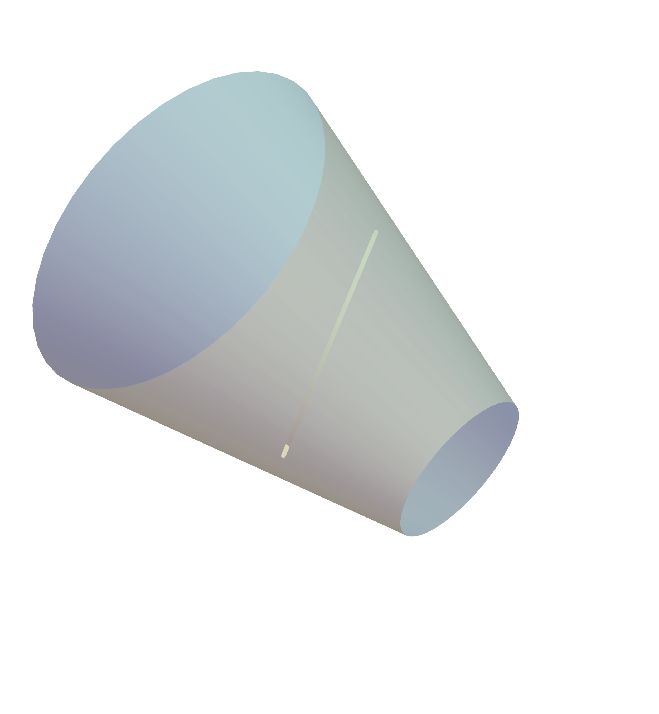

$M=\s{H}=\s{G}$ compact Lie group, $g\cdot x = gxg^{-1}$.
$\Sigma = \s{T}^r$ maximal torus of $\s{G}$ (maximal torus theorem).
Two actions $\s{H}_1 \curvearrowright M,\, \s{H}_2 \curvearrowright M$ are orbit equivalent if $\exists \, f\in I(M)$ with $f(\s{H}_1 \cdot p)=\s{H}_2 \cdot f(p)$ for all $p\in M$.
Main problem.
Given $M$, classify polar actions on $M$ up to orbit equivalence.
Symmetric spaces
$M$ is a symmetric space if every $p\in M$ admits a geodesic reflection $s_p$.
$M=\s{G}/\s{K}$, where $\s{G}=I^0(M)$ and $\s{K}=\s{G}_o$, $o\in M$.
$\Theta \colon g\in \s{G}\mapsto s_o g s_o$ group involution $\rightsquigarrow$ $\theta=\Theta_*$ involution of $\g{g}$.
Objective.
Study polar homogeneous foliations on symmetric spaces of noncompact type.
Codimension two polar homogeneous foliations on symmetric spaces of noncompact type
J. C. Díaz-Ramos, J. M. Lorenzo-Naveiro, Codimension two polar homogeneous foliations on symmetric spaces of noncompact type, Adv. Math.472 (2025), 110295
Symmetric spaces of noncompact type
$M=\s{G}/\s{K}$ (irreducible) symmetric space of noncompact type.
$\g{a}_\Phi\oplus\g{n}_\Phi$ subalgebra, $\s{A}_\Phi\s{N}_\Phi$ induces a polar homogeneous foliation.
$B_\Phi$ section of $\s{A}_\Phi\s{N}_\Phi\curvearrowright M$ through $o$ $\rightsquigarrow$ $\operatorname{rank}(B_\Phi)=\lvert \Phi \rvert$.
$B_\Phi$: boundary component of $M$ associated with $\Phi$.
$\s{H}\curvearrowright B_\Phi$
$\s{H}\s{A}_{\Phi}\s{N}_\Phi \curvearrowright M$
Theorem A (Díaz-Ramos, LN).
$M$ irreducible symmetric space of noncompact type, $\c{F}$ codimension two polar homogeneous foliation on $M$.
Then one of the following holds:
$\c{F}$ is hyperpolar (BDT).
$\c{F}$ is orbit equivalent to the canonical extension of a polar homogeneous foliation on some $B_\Phi$, $\lvert \Phi \rvert = 1$.
Noncompact rank one symmetric spaces
$M=\s{G}/\s{K}=\F\s{H}^n$ symmetric space of rank one.
$\g{a}=\RR$ and $\g{n}=\g{g}_\alpha\oplus \g{g}_{2\alpha}$.
Theorem (Díaz-Ramos, LN).
Every codimension two polar homogeneous foliation on $\F \s{H}^n$ is congruent to either an $\c{F}_\xi$ or an $\c{F}_{\g{v}}$.
Theorem B (Díaz-Ramos, LN).
$M$ irreducible symmetric space of noncompact type.
Every C2 polar nonhyperpolar homogeneous foliation on $M$ is congruent to the orbit foliation induced by either:
$\s{S}_\xi$, where $\g{s}_\xi = (\ker \alpha)\oplus (\g{n}\ominus \RR \xi), \; \alpha\in \Lambda, \, \xi\in \g{g}_\alpha$, or
Suppose $\c{F}$ is a cohomogeneity 2 polar nonhyperpolar homogeneous foliation on $M$.
$\c{F}$ is induced by a closed connected solvable $\s{S}\subseteq \s{G}$.
We may assume $\g{s}\subseteq \g{t}\oplus \g{a}\oplus \g{n}, \;\g{t}\subseteq \g{g}_0\cap \g{k}$ abelian.
Using an algebraic characterization, we get $\g{s}_{\g{a}\oplus \g{n}}$ is an $\g{s}_\xi$ or an $\g{s}_{\g{v}}$.
If $\g{s}_{\g{a}\oplus \g{n}}=\g{s}_{\xi}$ (respectively, $\g{s}_{\g{v}}$), then $\s{S}$ has the same orbits as $\s{S}_{\xi}$ (respectively, $\s{S}_{\g{v}}$).
Polar homogeneous foliations on $\H\s{H}^n$ and $\O\s{H}^2$
Joint work with J. C. Díaz-Ramos
Examples of foliations
$M=\F\s{H}^n$.
The foliations $\c{F}_\xi$ and $\c{F}_{\g{v}}$ generalize to higher codimension:
The section is $\Sigma = \RR\s{H}^k$ with constant curvature $c = -1/4$.
Polar foliations on $\H\s{H}^2$ and $\O\s{H}^2$
Theorem A (Díaz-Ramos, LN).
The hyperbolic plane $M=\F\s{H}^2$, $\F\in \{\H,\O\}$, admits exactly four (nontrivial) polar homogeneous foliations up to orbit equivalence:
$\s{AN}\curvearrowright M, \quad \s{N}\curvearrowright M, \quad \s{S}_{0,\ell}\curvearrowright M,\quad \s{S}_{\g{a},\ell}\curvearrowright M.$
Note. $\dim \ell = 1$.
Theorem B (Díaz-Ramos, LN).
If $\s{S}\curvearrowright \F\s{H}^n$ ($\F\in \{\H,\O\}$) is a nontrivial polar action with cohomogeneity $\geq 2$, then its section is a totally geodesic $\RR\s{H}^k$ with constant curvature $c \in \{ -1,-\tfrac{1}{4} \}$.
Standard polar foliations on $\H\s{H}^n$
$\c{F}$ polar foliation on $M$.
$\c{F}$ is standard if it is induced by some $\s{S}\subseteq \s{AN}$ up to orbit equivalence.
Note.
$\s{S}_{\g{b},\g{v}}\curvearrowright \F\s{H}^n$ is standard, where $\g{s}_{\g{b},\g{v}}=(\g{a}\ominus \g{b})\oplus (\g{n}\ominus \g{v})$.
Theorem C (Díaz-Ramos, LN).
If $\c{F}$ is a (nontrivial) polar standard homogeneous foliation on $\H\s{H}^n$, then $\c{F}$ is isometrically congruent to the orbit foliation induced by some $\s{S}_{\g{b},\g{v}}$.
Part II Totally geodesic submanifolds
J. M. Lorenzo-Naveiro, A. Rodríguez-Vázquez,
Totally geodesic submanifolds of the homogeneous nearly Kähler 6-manifolds and their $\s{G}_2$-cones, arXiv:2411.11261 [math.DG]
Theorem 6.25 (LN, Rodríguez-Vázquez).
$\Sigma$ totally geodesic in $\widehat{M}$.
Then one of the two holds:
$\Sigma=\widehat{S}\,$ for $S\to M$ totally geodesic.
$\Sigma$ is (up to surjective local isometry) a complete totally geodesic hypersurface in $\widehat{S}$ for $S\to M$ totally geodesic.

Theorem (Jentsch, Moroianu, Semmelmann '13).
If $\textup{Hol}(M^7)=\s{G}_2$, then $M$ has no totally geodesic hypersurfaces.
Corollary D (LN, Rodríguez-Vázquez).
$\widehat{M}$ cohomogeneity one $\s{G}_2$-cone.
Every maximal totally geodesic submanifold $\Sigma$ of $\widehat{M}$ is:
Associative (calibrated by the $\s{G}_2$-structure $\phi$) if $\dim \Sigma = 3$.
Coassociative (calibrated by $\star\phi$) if $\dim \Sigma = 4$.
Part III
Non-Lorentzian homogeneous spacetimes
Joint work with J. M. Figueroa-O'Farrill
Minkowski spacetime and limits
Minkowski spacetime $(c>0)$: $\RR^{d+1}$ with the Lorentzian inner product
$\gamma((x,t),(y,s))=\langle x, y \rangle -c^2 ts.$
Galilei spacetime ($c\to \infty$): $\RR^{d+1}$ with a clock and ruler:
$\tau(x,t)=t, \qquad \lambda((x,0),(y,0))=\langle x, y \rangle.$
If $d=3$, then $\g{g}\cong \g{g}'$ if and only if there exist $h$, $\psi$ and $\mu\in (W^*)^\g{b}$ with
$$
\begin{aligned}
\rho' \circ \psi ={}& \Ad(h)\circ \rho,\qquad\psi \circ \varphi=h^*\varphi' \\[1ex]
h\circ \sigma ={}& h^*\sigma' + \mu \otimes h + h \otimes \mu.
\end{aligned}
$$
Equivalent problem.
Compute for each Bianchi algebra $\g{b}$:
All $2$-dimensional representations of $\g{b}$ up to weak equivalence.
For each representation $\rho$:
The orbit space of $\Aut(\rho)\curvearrowright \Hom_{\g{b}}(\Lambda^2 W ,\g{b})$, where